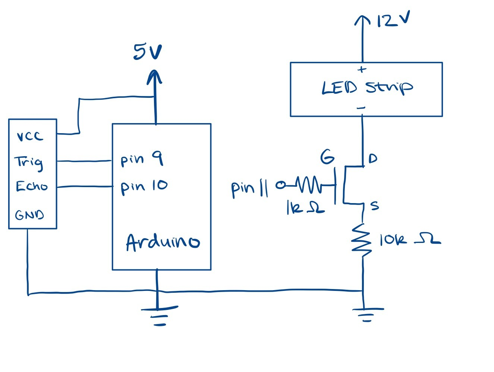
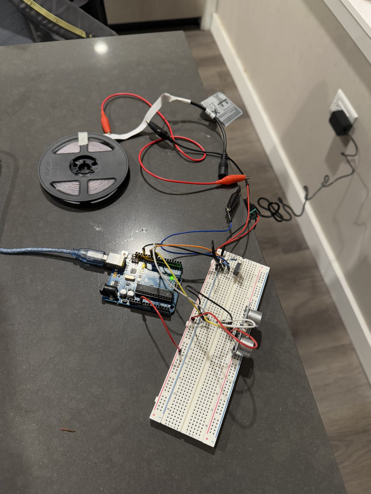
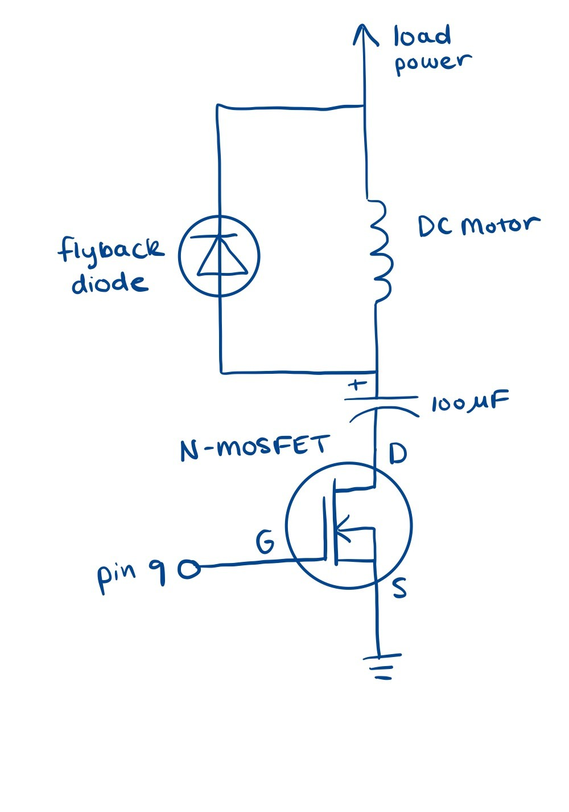
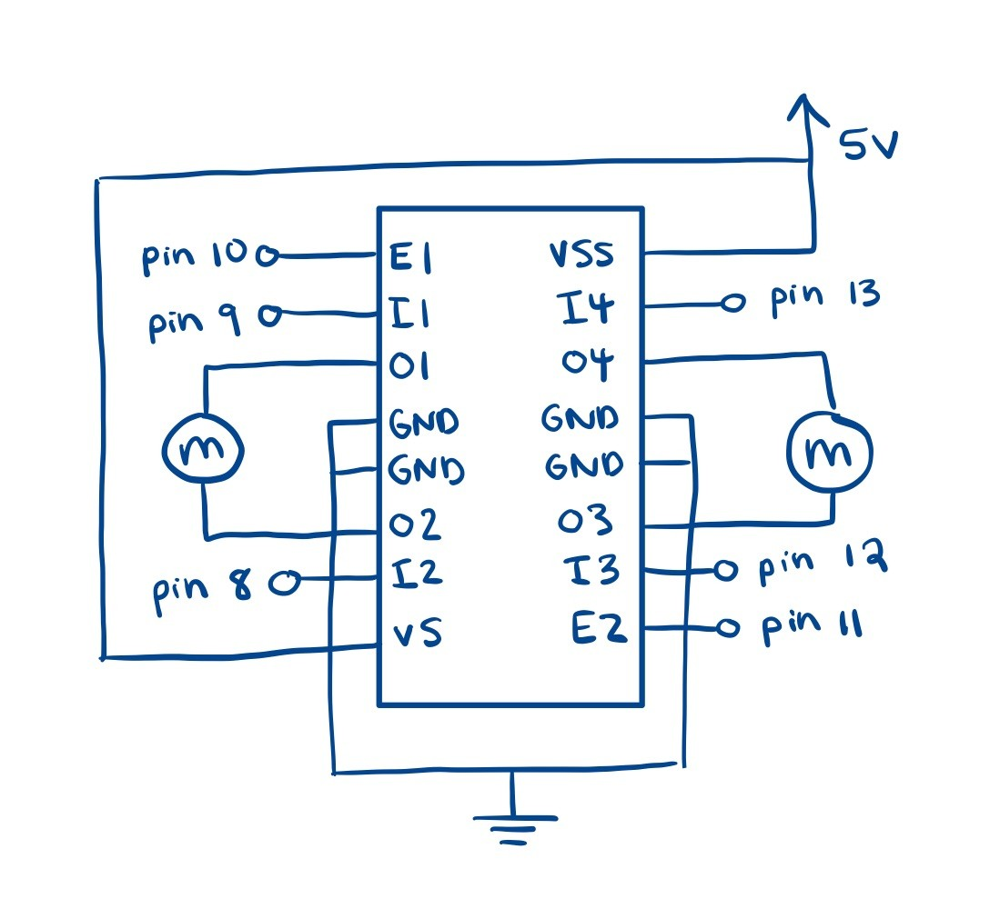

Fig 1: Circuit Schematic
This is the schematic of my setup that uses an ultrasonic motor, N-MOSFET transistor, and an LED strip.
I used a 10k resistor between the transistor source and ground to act as a pull-down resistor, which makes sure that the MOSFET stays off when no signal is applied. I used a 1k resistor between the transistor gate and Pin 11 to reduce too much current draw when switching the MOSFET on and off.
Fig 2: Circuit Setup
I utilized alligator clips to help connect the negative and positive terminals of the LED strip (not to each other).
Fig 3: Higher Output GIF

The LED strip will grow brighter and dim based on how close an object is to the ultrasonic sensor. The closer an object is, the brighter the LED strip will be, and vice versa. The LED strip turns off when there is no object within a certain distance, which is adjustable in the code.
Firmware
// Unchanging constants
const int trigPin = 9; // define pin that Trig is connected to
const int echoPin = 10; // define pin that Echo is connected to
const int nPin = 11; // N-MOSFET gate connected to pin 11
const int DISTANCE_THRESHOLD = 10; // distance threshold in cm
// Changing variables
float duration, distance; // duration: length of sound wave; distance: how far away object is
void setup() {
pinMode(trigPin, OUTPUT); // trig pin set to output
pinMode(echoPin, INPUT); // echo pin set to input
pinMode(nPin, OUTPUT); // Set LED strip pin as output
Serial.begin(9600); // initialize serial port
}
void loop() {
// send a short pulse to trigger the ultrasonic sensor
digitalWrite(trigPin, LOW);
delayMicroseconds(2);
digitalWrite(trigPin, HIGH);
delayMicroseconds(10);
digitalWrite(trigPin, LOW);
// measure the time it takes for the echo to return
duration = pulseIn(echoPin, HIGH);
// convert time to distance in centimeters
distance = (duration * 0.0343) / 2;
// map the distance to PWM brightness (closer = brighter)
int brightness = map(distance, 2, DISTANCE_THRESHOLD, 255, 0); // Closer = brighter, farther = dimmer
brightness = constrain(brightness, 0, 255); // Ensure the value stays within valid range
// apply brightness to LED strip
analogWrite(nPin, brightness);
delay(100); // small delay
}
Additional Questions:
1. Given the dataset for the n-mosfet transistor, what is the absolute maximum amount of current between pins 2 and 3?
The absolute maximum amount of continuous current (Continuous Drain Current) is 37.2A but for short pulses (Pulsed Drain Current), it can handle up to 80A. These values were located in the Maximum Ratings table.
2. Draw a schematic for a circuit with using at least your arduino, a DC motor, a flyback diode, and capacitors between power and ground. Find parts with datasheets you could use for each of these schematic components.
Arduino Uno datasheet: https://docs.arduino.cc/resources/datasheets/A000066-datasheet.pdf
RS PRO DC Motor: https://docs.rs-online.com/eaec/A700000007082065.pdf
NTB5860NL N-Channel Power MOSFET: https://www.onsemi.com/pdf/datasheet/ntb5860nl-d.pdf
100uF Electrolytic Capacitor JWCO: http://www.jiaweicheng.com/Data/jiaweicheng/upload/file/20210908/LF.pdf
14N00X, General Purpose Plastic Rectifier (flyback diode): https://www.vishay.com/docs/88503/1n4001.pdf
3. Draw a schematic using at least your arduino, the L293 chip, and two motors. Write (pseudo) code that shows how you would move the motors both forward, both back, then one forward one back, and one back then forward.

// Motor A
const int motorPin1 = 9;
const int motorPin2 = 8;
// Motor B
const int motorPin3 = 12;
const int motorPin4 = 13;
void setup() {
// set pins as outputs
pinMode(motorPin1, OUTPUT);
pinMode(motorPin2, OUTPUT);
pinMode(motorPin3, OUTPUT);
pinMode(motorPin4, OUTPUT);
// turn both motors forward
digitalWrite(motorPin1, HIGH);
digitalWrite(motorPin2, LOW);
digitalWrite(motorPin3, HIGH);
digitalWrite(motorPin4, LOW);
delay(2000); // Run for 2 seconds
// turn both motors backward
digitalWrite(motorPin1, LOW);
digitalWrite(motorPin2, HIGH);
digitalWrite(motorPin3, LOW);
digitalWrite(motorPin4, HIGH);
delay(2000); // Run for 2 seconds
// turn Motor A forward and Motor B backward
digitalWrite(motorPin1, HIGH);
digitalWrite(motorPin2, LOW);
digitalWrite(motorPin3, LOW);
digitalWrite(motorPin4, HIGH);
delay(2000); // Run for 2 seconds
// turn Motor B forward and Motor A backward
digitalWrite(motorPin1, LOW);
digitalWrite(motorPin2, HIGH);
digitalWrite(motorPin3, HIGH);
digitalWrite(motorPin4, LOW);
delay(2000); // Run for 2 seconds
// stop motors
digitalWrite(allMotorPins, LOW);
}